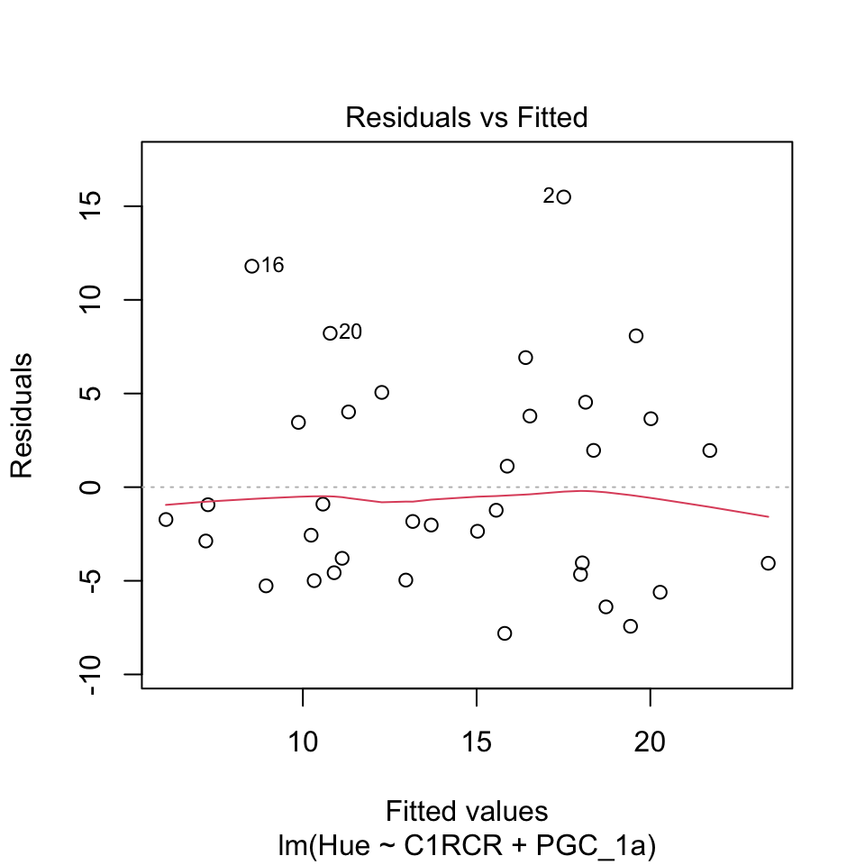
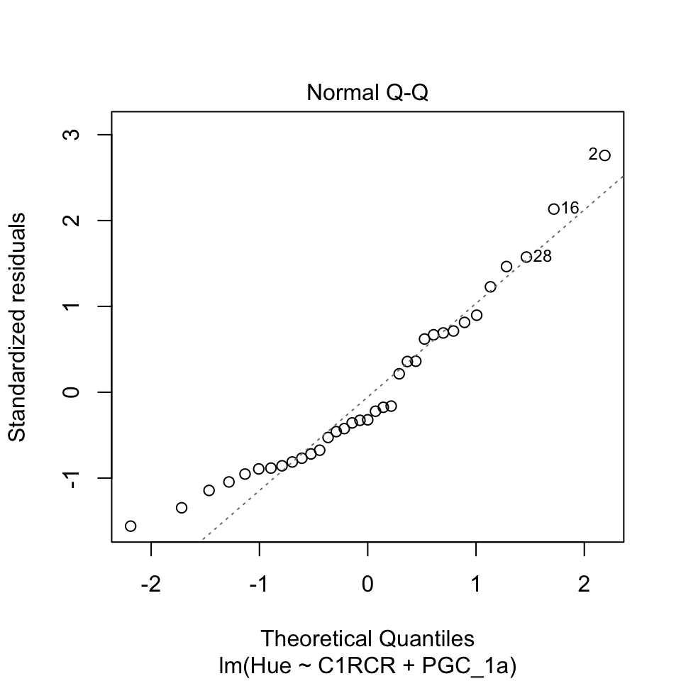
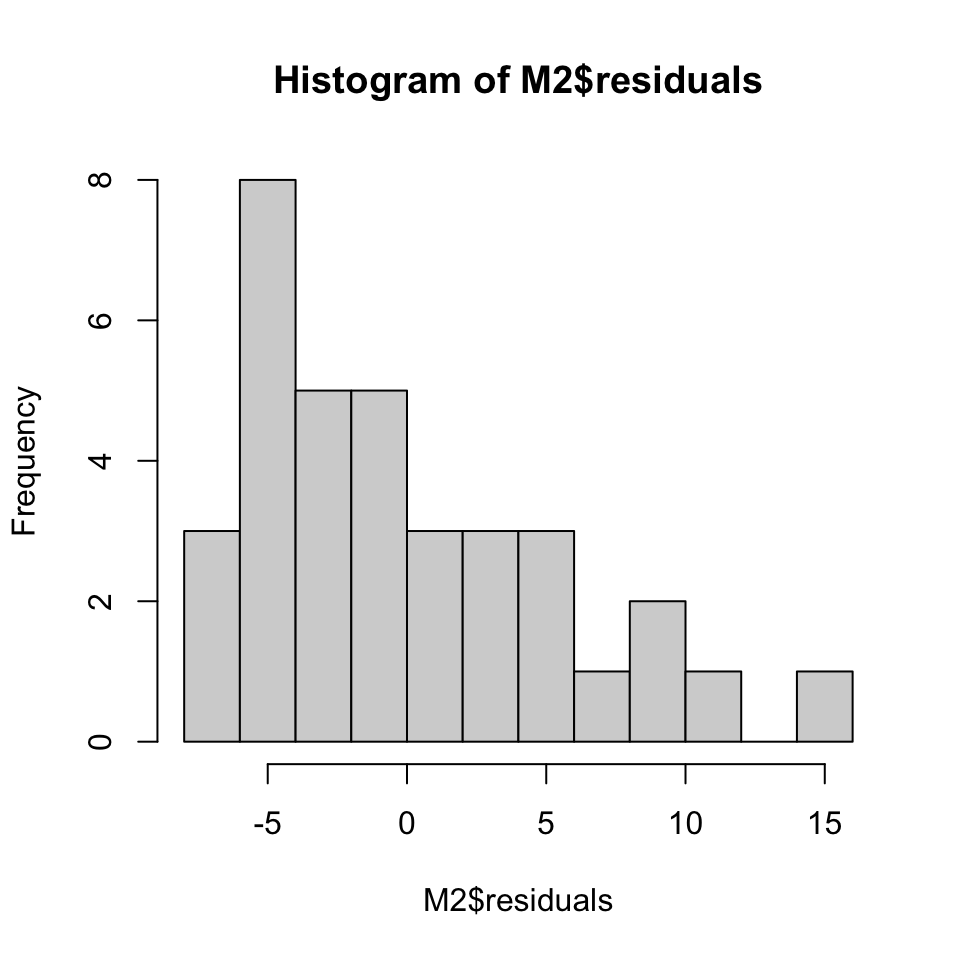
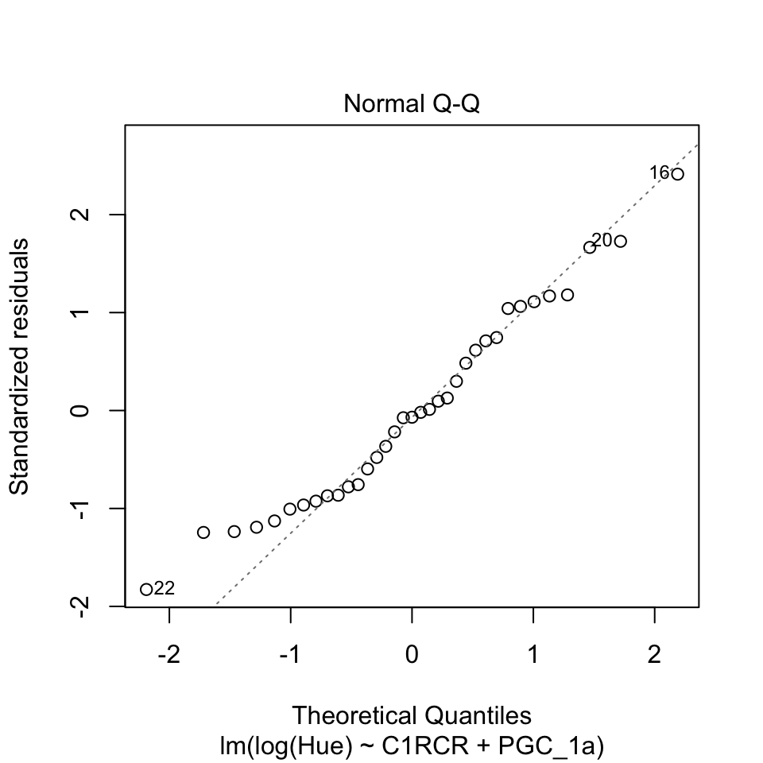
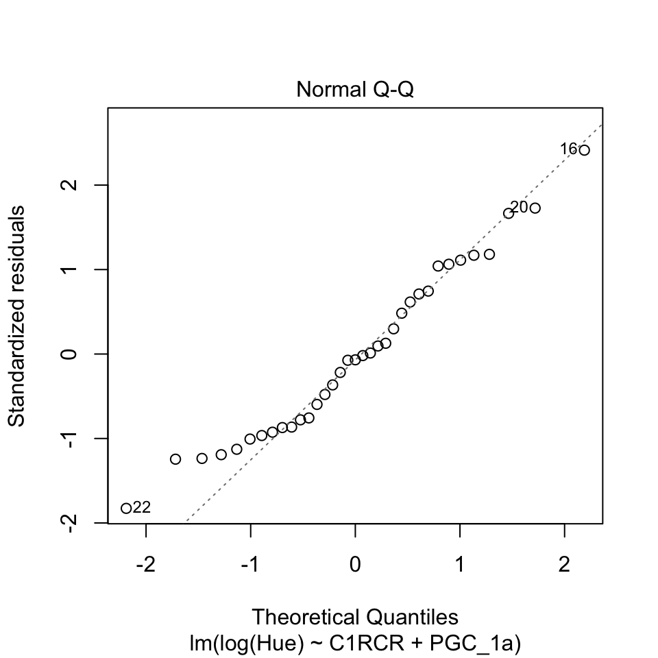
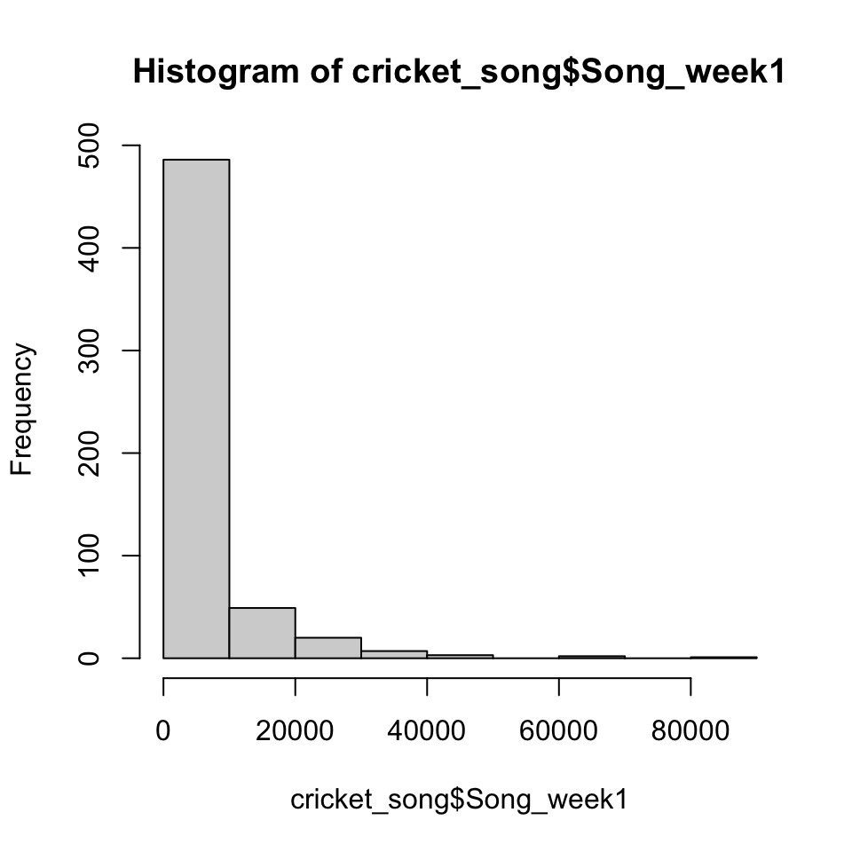
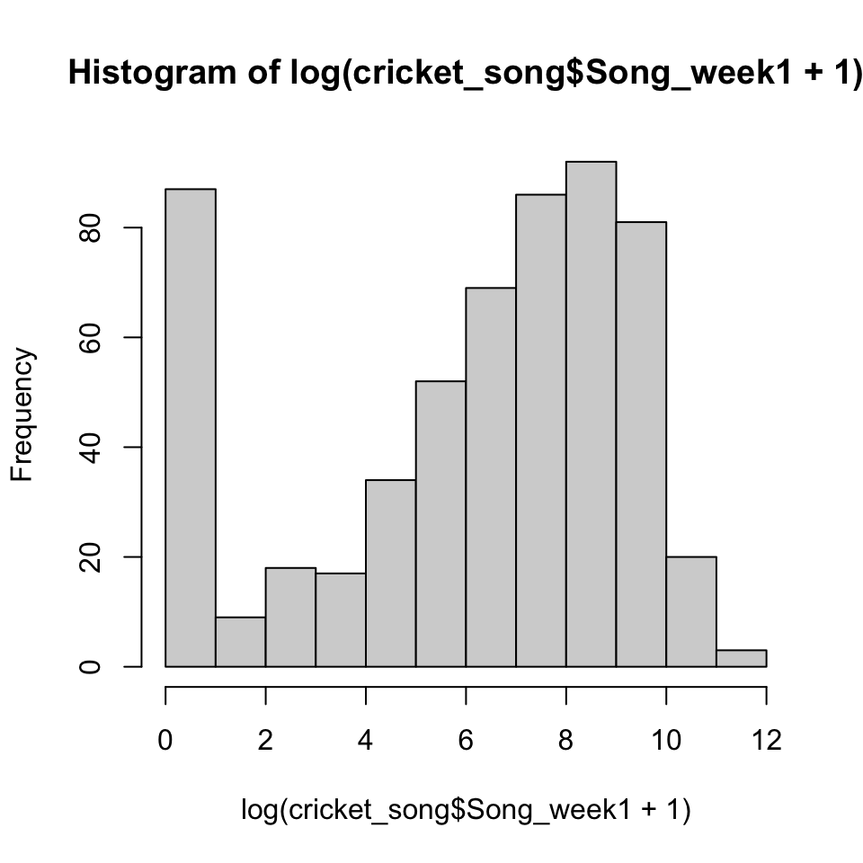
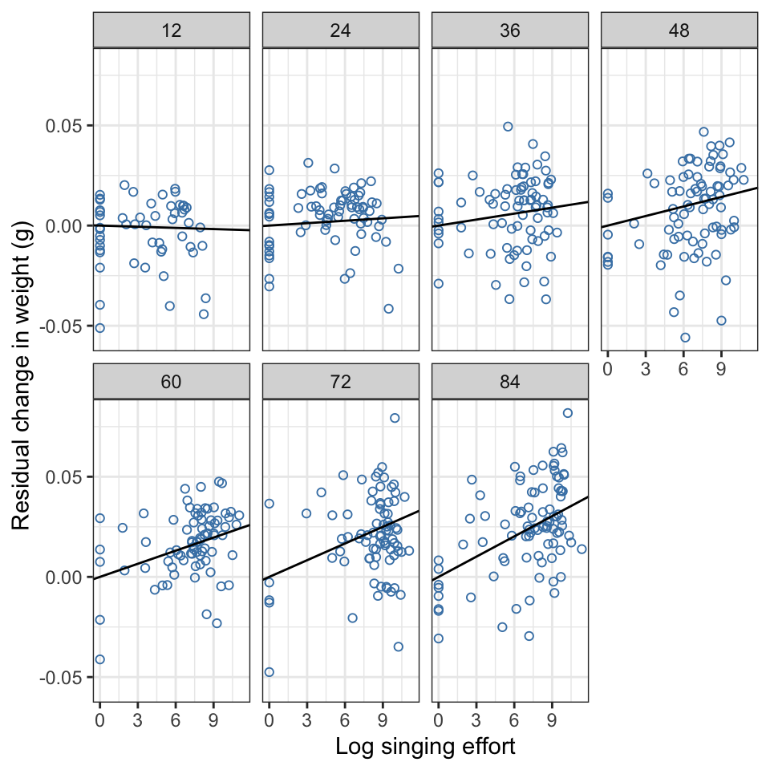

Multiple continuous explanatory variables.
In much the same way that we can extend the simple ANOVA type linear model to include multiple explanatory factors, we can extend the simple regression type linear model to include multiple continuous explanatory variables — an analysis that’s often called multiple regression. This has the same advantages as fitting multiple explanatory factors: we carry out our analysis as a single model fitting exercise rather than as a series of individual analyses; we can detect effects that would otherwise not be found; we can control for the effects of variables statistically; and we can check for interaction terms between our variables. Much of the procedure for dealing with multiple continuous explanatory variables is similar to that for multiple factors so we can jump straight into some exercises.
Note that some of the material here is a bit advanced and it’s assumed that you’ve done the earlier tutorials in the series or are otherwise familiar with basic linear modelling in R. If that’s not the case then you might want to do the first three tutorials before attempting this one.
Exercise 1: house finch colouration and mitochondrial function
The data we will analyse here come from a study published in 2019 by Geoffrey Hill of Auburn University and co-workers1. This research was based on the observation that many animals use visual signals with carotenoids as the pigment in question, and it’s now well known that in many cases the redder the visual signal the better the signaller performs in terms of acquiring mates or competing for resources. The mechanism linking red carotenoid signalling to individual quality is not known, however, but Hill et. al. followed previous work which had found that many bird species ingest yellow carotenoids but then oxidise these to red pigments, probably in the mitochondria. One part of Hill et al.’s investigation into this involved measuring the hue of the red feathers and a series of measures of mitochondrial function in 36 male house finches Haemorhous mexicanus at a time when they were moulting and therefore actively producing red carotenoids.

Figure 1 Male and female house finches showing the sexually dimorphic red colouration of the male. Photo by Donald Willin, released under a creative commons attribution 2.0 licence.
The dataset which we’ll analyse is a subset of a larger dataset which was analysed by Hill et al.. Let’s load it into R and check its structure.
finch <-
read.csv(
"https://github.com/rjknell/Linear_models/raw/master/data/Hill_et_al_finch_coloration_trimmed.csv"
)
str(finch)'data.frame': 36 obs. of 5 variables:
$ ID : int 7261 7271 7281 7282 8031 8032 8041 8101 8104 8105 ...
$ Hue : num 23.33 33 9.67 12 17.33 ...
$ C1RCR : num 2.97 2.73 4.51 2.06 4.04 1.96 3.66 1.46 2.9 1.77 ...
$ C1MMP : int 335 205 358 291 367 339 409 489 431 295 ...
$ PGC_1a: num 0.0651 0.0691 0.0512 0.0691 0.0546 0.0522 0.0507 0.0606 0.0791 0.0667 ...We have Hue as a response variable. Higher values of Hue indicate yellower plumage and lower values redder for a particular bird. There are then three measures of mitochondrial function: firstly, C1RCR which refers to the “Respiratory Control Ratio”, calculated by dividing the maximum respiration rate by the basal rate. Secondly we have C1MMP which refers to the Mitochondrial Membrane Potential, and finally there is PGC_1a, a measure of the levels of a protein which is activates transcription in mitochondrial biogenesis, so a measure of the rate at which mitochondria are replaced.
As always we’ll start with some exploratory graphs. In this case we’ll draw scatterplots of Hue against our three measures of mitochondrial function. See if you can fill in the missing variables in this code block
par(mfrow = c(3,1))
plot(Hue ~ C1RCR,
data = finch,
pch = 16,
col = "aquamarine4",
ylab = "Hue",
xlab = "Respiratory control ratio")
plot(XXXXX ~ XXXXX,
data = XXXXX,
pch = 16,
col = "aquamarine4",
ylab = "Hue",
xlab = "Mitochondrial membrane potential")
plot(XXXXX ~ XXXXX,
data = XXXXX,
pch = 16,
col = "aquamarine4",
ylab = "Hue",
xlab = "PGC 1a")
par(mfrow = c(1,1))# What you need to do is to put the relevant
# variable names into the formulas in the
# second and third plot function calls, and
# fill in the name of the data frame in the
# data = argument# This is the solution
par(mfrow = c(3,1))
plot(Hue ~ C1RCR,
data = finch,
pch = 16,
col = "aquamarine4",
ylab = "Hue",
xlab = "Respiratory control ratio")
plot(Hue ~ C1MMP,
data = finch,
pch = 16,
col = "aquamarine4",
ylab = "Hue",
xlab = "Mitochondrial membrane potential")
plot(Hue ~ PGC_1a,
data = finch,
pch = 16,
col = "aquamarine4",
ylab = "Hue",
xlab = "PGC 1a")
par(mfrow = c(1,1))Looking at these plots we can see that there might be relationships between some of these variables and the redness of the bird’s plumage. Recalling that high values for Hue mean yellower feathers, there might be a positive relationship between Hue and PGC 1a expression, and there might be negative relationships with respiratory control ratio and mitochondrial membrane potential (meaning in the last two cases that “better” individuals with redder feathers have higher values for RCR and MMP). More usefully, there’s no indication of anything that might cause problems in our analysis: no wildly implausible or potentially problematic data points and everything looks quite well behaved. One data point for MMP does seem a little low given the distribution of the others but not to the extent that we need to worry much about it. Let’s fit a model.
Fill in the formula in the lm() function call. We want to explain the patterns in Hue and we’ll fit just the main effects of C1RCR, C1MMP and PGC_1a: we won’t test for interaction terms here.
We’ll use drop1() to check on the significance of each explanatory variable.
M1 <- lm(, data = finch)
drop1(M1, test = "F")# Hue is the response variable so that goes on the left of
# the tilde. The three explanatory variables go on the
# right hand side of the tilde, separated by plus symbols# This is the solution:
M1 <- lm(Hue ~ C1RCR + C1MMP + PGC_1a, data = finch)
drop1(M1, test = "F")According to our deletion test two of our three explanatory variables have statistically significant effects on the redness of the finch’s feathers. The third, mitochondrial membrane potential, does not. Depending on our opinion of the various arguments surrounding different model selection techniques, we could potentially choose to remove this non-significant term from our model to give us a minimal adequate model to describe the patterns in these data (see the tutorial on model selection for more on this). Since C1MMP is not a variable which we have introduced into the model to allow us to control for an effect, and it is not a variable that is in the model because it represents some important element of experimental design (e.g. if the design were a blocked one we should include block as a factor) we can argue that removing it is justified.
Fit a second model called M2 and assess the significance of the explanatory variables using drop1()
# Just use the code from the previous fit with C1MMP
# removed and M1 replced by M2
#
# Don't forget to change the name of the model in the
# drop1() function call# This is the solution
M2 <- lm(Hue ~ C1RCR + PGC_1a, data = finch)
drop1(M2, test = "F")This leaves us with a model with two significant explanatory variables. We should check our diagnostic plots now.
plot(M2, which = 1:2)
Have a think about the diagnostic plots and try to answer the questions.
Click here for more on the diagnostics
Rule 1 of dealing with real data is that your diagnostic plots are rarely going to give you a clear answer about the distributions of your residuals. This is a prime example of this. Both of these plots show us that there is a small amount of positive skew in our residuals: in the plot of residuals versus fitted values you can see some residuals with rather high positive values, and the qq-plot has the characteristic shape associated with positive skew, with the points following a curve with the smallest and the largest residuals both having more positive values than would be predicted if the residuals were following a normal distribution. What isn’t clear is whether this amount of skew is likely to making a serious impact on our fitted model. We can check a histogram of the residuals to see if this gives any further enlightenment.
hist(M2$residuals, breaks = 10)
These are clearly somewhat positively skewed. Overall the amount of skew in the residuals is not especially severe, but we should probably try to do something about it. We could try a square root transformation of these data but, to cut a long story short, a square root transformation doesn’t really rectify the problem so a log transformation is necessary. See if you can change this code to log transform the response variable so we can see what this does to the model with all three explanatory variables. There are no zeros in the Hue variable so there’s no need to add a constant.
L1 <- lm(Hue ~ C1RCR + C1MMP + PGC_1a, data = finch)
drop1(L1, test = "F")# Just use the log() function on the Hue variable# This is the solution
L1 <- lm(log(Hue) ~ C1RCR + C1MMP + PGC_1a, data = finch)
print(drop1(L1, test = "F"))C1MMP remains non-significant but PGC_1a is now slightly the wrong side of 0.05. Let’s simplify the model by removing the variable with the least support,C1MMP, and see what that looks like.
L2 <- lm(log(Hue) ~ C1RCR + PGC_1a, data = finch)
drop1(L2, test = "F")OK, since we removed the less well supported term from the model PGC_1a is statistically significant in this model, although not especially so. Let’s re-check the diagnostics to see if the log transformation has sorted out the error distribution.
plot(L2, which = 1:2) 

Things are better. The residuals versus fitted values plot no longer has any indication of skew, but there is a hint of a curve from the non-parametric smoother that R kindly draws across it in red. Is that indicative of a serious issue? Probably not in this case since the appearance of a curve is really being caused by a few negative residuals at the highest and lowest fitted values. If you were concerned about this you could try fitting a model with a quadratic term for one of the explanatory variables but we’ll leave it there. The qq-plot shows that the log transform has fixed the issues with the most positive residuals although there is still some deviation from the line from the most negative residuals.
- Hill, G.E., Hood, W.R., Ge, Z., Grinter, R., Greening, C., Johnson, J.D., Park, N.R., Taylor, H.A., Andreasen, V.A., Powers, M.J., Justyn, N.M., Parry, H.A., Kavazis, A.N. & Zhang, Y. (2019) Plumage redness signals mitochondrial function in the house finch. Proceedings of the Royal Sociaty B: Biological sciences, 286, 20191354.
Interpreting the fitted model
Take a look at the summary() output for the L2 model.
L2 <- lm(log(Hue) ~ C1RCR + PGC_1a, data = finch)# This is the solution
summary(L2)Much as the coefficients table for a simple linear regression gives us values we can use to generate the equation for a straight line, the coefficients here can give us a more complex equation relating our explanatory variables to the response variable. For a model with two continuous explanatory variables, the equation for the fitted model is:
\[y = a + b \times x_1 + c \times x_2\] where \(a\) is the intercept, \(b\) is the slope for variable \(x_1\) and \(c\) is the slope for variable \(x_2\). This equation allows us to generate predicted values from our model. You will often see linear model equations written with a somewhat different notation:
\[y_i = \beta_0 + \beta_1 x_{1i} + \beta_2 x_{2i} + \epsilon_i, \quad i = 1...n\] This is the formal notation for a linear model with two explanatory variables. It looks rather more complicated but the fundamentals are the same: \(\beta_0\) is the intercept and \(\beta_1\) and \(\beta_2\) are the slopes for the two variables \(x_1\) and \(x_2\). The subscript \(i\) you can see refers to the “i-th” value in the data set. As an example, if we were thinking about the the third observation then \(i\) would be three. \(y_i\) in this case would refer to the value of the third observation in the data set, \(x_{1i}\) means the third value of \(x_1\) and \(x_{2i}\) the third value of \(x_2\). Finally, \(\epsilon_i\) is the error term: so each of the \(i\) values of \(y\) in the dataset will deviate from the predicted value by some degree, and this part of the equation represents that deviation. For a standard linear model this error is assumed to be drawn from a normal distribution with a mean of zero and a fixed standard deviation, hence the assumptions that the errors in a dataset should be normal and the variance should be equal across the dataset.
For the moment we’ll stick with the simpler version which will generate the predicted values. We can extract the coefficients from our table above and generate an equation to relate Hue to C1RCR and PGC_1a:
\[log (Hue) = 3.03 - 0.262 \times C1RCR + 7.10 \times PGC\_1a.\]
Whereas simple linear regression gives us a predicted straight line, in this case the equation describes a flat surface, and more complicated models with more than two explanatory variables describe more complex surfaces. These are not easy to visualise: as a general rule even “3D” graphs are poor ways to display data and plotting graphs in higher dimensions tends to be problematic. One option you’ll often see is to plot the response variable against each explanatory variable separately and then to show a fitted line from a simple linear regression as an illustration of the way the two are related. We’ll do this for our example: I’ve given you the code for the first plot, see if you can generate the code for the second.
# Two plots side by side
par(mfrow = c(1,2))
# plot log hue against C1RCR
plot(log(Hue) ~ C1RCR,
data = finch,
pch = 16,
col = "steelblue",
ylab = "Log of Hue",
xlab = "C1RCR level")
# use abline() to draw the line from a
# simple linear regression
abline(lm(log(Hue) ~ C1RCR, data = finch),
col = "blue",
lwd = 2)
# plot log hue against PGC_1a
# use abline() to draw the line from a
# simple linear regression
# reset plot window to a single plot
par(mfrow = c(1,1))# You can use the code for the first plot
# and the abline function
# but you need to change the x-variable
# name and also the x-axis label# You can use the code for the first plot
# and the abline function
# but you need to change the x-variable
# name and also the x-axis label
#
# Make sure you have commas between each argument
# and that you have matching brackets# This is the solution
# Two plots side by side
par(mfrow = c(1,2))
# plot log hue against C1RCR
plot(log(Hue) ~ C1RCR,
data = finch,
pch = 16,
col = "steelblue",
ylab = "Log of Hue",
xlab = "C1RCR level")
# use abline() to draw the line from a
# simple linear regression
abline(lm(log(Hue) ~ C1RCR, data = finch),
col = "blue",
lwd = 2)
# plot log hue against PGC_1a
plot(log(Hue) ~ PGC_1a,
data = finch,
pch = 16,
col = "steelblue",
ylab = "Log of Hue",
xlab = "PGC 1a level")
# use abline() to draw the line from a
# simple linear regression
abline(lm(log(Hue) ~ PGC_1a, data = finch),
col = "blue",
lwd = 2)
# reset plot window to a single plot
par(mfrow = c(1,1))This is certainly illustrative and in this case it gives a reasonable impression of the way these two variables relate to feather hue, but it’s not a great representation of the actual fitted model. Because variables in a linear model are fitted to the data with effects of other variables partialled out, you can find that including your variables in linear models can reveal effects which are substantially different from those that you would see if you analysed your variables separately, so be careful if you present your data like this.
If you want to show the fitted model and the data more accurately, you can plot the data with the effect of the first variable removed. Our equation for our fitted model in this case is
\[log (Hue) = 3.03 - 0.262 \times C1RCR + 7.10 \times PGC\_1a.\]
So we can generate a new variable which is
\[log(Hue) - (3.03 - 0.262 \times C1RCR).\]
To understand what this new variable represents, recall that when a linear model is fitted with more than one explaantory variable, the sums of square are calculated sequentially. So for a two variable model, the variance is firstly divided into the treatment variance for the first variable in the model formula (the variance in the data explained by that variable) and the remaining variance which that first variable can’t explain. This can be thought of as being equivalent to what the the residuals would be from fitting that first variable. The second variable is then fitted to to these data, so you can think of this as fitting the second variable to the response variable once it’s been adjusted to remove the effect of the first variable — statisticians would say that the effects of the first variable have been partialled out from the response variable. This allows us to partition the remaining variance into the treatment variance for the second variable and the error variance. What we’re calculating here is essentially those adjusted values for log(Hue) with the effects of C1RCR partialled out.
Now that we have these adjusted data we can plot the effect of PGC 1a against that, which will give a better visualisation of the effect of this variable as predicted by our model. Here’s a code framework: see if you can fill in the missing parts to generate a new plot showing the effect of PGC 1a. To draw in the effect of PGC 1a you need a line with an intercept of zero and a slope equal to the coefficient for PGC 1a in the model.
# Generate new variable with the effects of C1RCR removed
newvar <- XXXXX
# plot the new variable against PGC 1a
plot(XXXX ~ XXXX,
data = finch,
pch = 16,
col = "steelblue",
ylab = "Log of Hue minus the effect of C1RCR",
xlab = "XXXX")
# use abline() to draw the line from a
# simple linear regression
abline(a = X, b = X,
col = "blue",
lwd = 2)# To generate newvar:
newvar <- log(finch$Hue) - (3.03 - 0.262 * finch$C1RCR)# For the plot
plot(newvar ~ PGC_1a,
data = finch,
pch = 16,
col = "steelblue",
ylab = "Log of Hue minus the effect of C1RCR",
xlab = "PGC 1a")# For the line
abline(a = 0, b = 7.1,
col = "blue",
lwd = 2)Finally, we need to interpret these results in terms of the biology of the system. Bearing in mind that low scores of Hue indicate male birds with redder plumage, and redness seems to be acting as an indicator of ‘condition’ in these males, what do these results tell us? For the full story you’re best off reading the paper, but briefly:
- Overall there does seem to be a link between mitochondrial functioning and feather colour. The data we have here are correlational, of course, so we have to be cautious in our interpretation because we don’t know much about causality.
- More yellow plumage is associated with high levels of PGC 1a. This protein is associated with mitochondrial biogenesis and this result suggests that perhaps birds with redder feathers have lower rates of mitochondrial turnover.
- High RCR values are associated with redder males. RCR is the ratio of maximum respiratory rate to resting rate, and further analysis by the paper’s authors showed that the increased RCR in redder males was a consequence of lower resting rate rather than higher maximum rate, suggesting that “better” birds with redder feathers are paying less of a cost for supporting basal respiration.
Exercise 2: interactions and curves
In 2017 Tom Houslay and co-workers1 published a study of the relationship between, among other things, condition, resource availability (food quality) and sexual signalling (calling song) in the decorated cricket, Gryllodes sigillatus. Male crickets “sing” to attract females by rubbing specialised areas of their wings together, an activity which is energetically costly. As part of their study, Houslay et al. fed freshly eclosed2 adult male crickets on synthetic food with a 1:8 protein to carbohydrate ratio but which caried in total nutritional content from 12% to 84%, with the amount of nutritional content increasing in 12% increments between these limits. The crickets were weighed at the start of the experiment and again after a week, and the amount of time they spent singing during the week was recorded.
The data can be loaded from github:
cricket <- read.csv("https://github.com/rjknell/Linear_models/raw/master/data/houslay_data.csv")
str(cricket)'data.frame': 568 obs. of 5 variables:
$ Diet : int 12 24 24 24 36 36 36 36 48 48 ...
$ Pronotum : num 2.1 2.43 2.22 2.12 2.6 ...
$ Mass0 : num 0.191 0.209 0.158 0.169 0.219 ...
$ Delta_smi : num -0.00849 -0.03041 0.01761 -0.00974 0.00266 ...
$ Song_week1: int 0 0 25 0 1471 0 0 56 6996 657 ...The important variables from our point of view are Delta_smi which is the change in weight over the first week, Diet which gives the percentage nutritional content of the food the animal was fed and Song_week1 which is the total amount of time the cricket spent singing in the first week of the experiment. We’re interested in how the change in weight of these animals relates to their investment in signalling and to their diet. As always, we’ll start by looking at some plots of our data. We’d like a scatterplot of Delta_smi against Diet, and a second one of Delta_smi against Song_week1.
# Two plots side by side
par(mfrow = c(1,2))
# Plot of Delta_smi versus diet
# Plot of Delta_smi versus Song_week1
par(mfrow = c(1,1))# You need to use the plot() function with the
# variables specified by a formula, so the
# y-axis variable first, then a tilde ~, then
# the x-axis formula. Tell plot() which
# dataframe to look in with the data =
# argument and label the x- and y- axes
# with xlab = "NAME" and ylab = "NAME".
# Don't forget to put commas between all
# your arguments# Here is a code framework. You'll
# need one plot() command for Delta_smi
# versus Diet, and a second one for
# Delta_smi versus Song_week1
plot(Y-VARIABLE ~ X-VARIABLE,
data = DATAFRAME,
xlab = "X AXIS",
ylab = "Y AXIS")# Here is the code for the first plot
plot(Delta_smi ~ Diet,
data = cricket,
xlab = "Diet nutritional content (%)",
ylab = "Week1 Change in weight (g)")# Here is the solution
# Two plots side by side
par(mfrow = c(1,2))
# Plot of Delta_smi versus diet
plot(Delta_smi ~ Diet,
data = cricket,
xlab = "Diet nutritional content (%)",
ylab = "Week1 Change in weight (g)")
# Plot of Delta_smi versus Song_week1
plot(Delta_smi ~ Song_week1,
data = cricket,
xlab = "Time spent singing (s)",
ylab = "Week1 Change in weight (g)")
par(mfrow = c(1,1))Have a look at these scatterplots and try to answer these questions
Click for more on the patterns detected in the scatterplots
Looking at these scatterplots we’ve seen two issues that might concern us. Firstly, there is a suggestion that the relationship between diet and weight change might not conform to a straight line. We’ll bear this in mind when we fit our model — if this is the case we should see evidence for it in the diagnostic plots.
Secondly, one of our explanatory variables, Song_week1, is strongly positively skewed. We can confirm this by plotting a histogram:
hist(cricket$Song_week1,
breaks = 10)
Is this a problem? It’s important to understand that there’s no requirement for explanatory variables to follow, for example, a normal distribution: this only applies to the residuals of the response variable once an appropriate model has been fitted. Strong skew like this, however, tends to obscure any relationship between the response and the epxlanatory variable, and those few data points with very large values are likely to have a disproportionate effect n the overall model fit. It’s best in this case to transform these data to reduce the skew, and with this degree of skew then a log-transformation is approriate. There are some zeros in the data so we will add a constant, in this case 1, to our variable before transforming it. Let’s see what this does:
hist(log(cricket$Song_week1+1),
breaks = 10)
This distribution is still pretty weird, with a small amount of negative skew in the non-zero values and a good number of zeros as well. You could argue that this is evidence that there are really two classes of cricket: ‘singers’ and ‘non-singers’ and that it’s not appropriate to class them all together, but that’s something for a different analysis.
Is this OK as a distribution for an explanatory variable? Yes, probably. It would be nicer to have a more even distribution, but the linear model doesn’t make any assumptions about the distribution of the explanatory variables and we’ve no longer got those few datapoints with very large values so we’re probably OK using these data.
Houslay, T.M., Houslay, K.F., Rapkin, J., Hunt, J. & Bussière, L.F. (2017) Mating opportunities and energetic constraints drive variation in age‐dependent sexual signalling (ed C Miller). Functional ecology, 31, 728–741.
Eclosion refers to the moult that an insect undergoes when it becomes an adult.
Fitting a model
In the previous example we fitted a model with only the main effects of our explanatory variables. In this case we would like to know whether the relationship between weight gain and diet depends on the amount of time the cricket spent singing — in other words, does the change in weight from having a good or a poor diet depend on the amount of energy the cricket invested into signalling? To test this we need to fit a model with an interaction between Diet and Song_week1 as well as the main effects. Try to do this, and then check the significance of the interaction using drop1(). Call your model C1.
Don’t forget you need to add 1 to the Song_week1 variable and log transform it.
# To fit a model with an interaction term you
# can either use the format
#
# variable1 + variable2 + variable1:variable2
# or
# variable1 * variable2
#
# The second one in this case is
# exactly the same as the first but if there
# are more variables it will fit all of the
# possible interaction terms.# Don't forget to specify the data frame with
# data =
#
# For the drop1() function call you need to
# say what test to use with test = "F"
#
# Make sure there's a comma between your arguments
#
# To log transform the Song_week1 variable it's
# log(Song_week1 +1)# Here is the solution
C1 <- lm(Delta_smi ~ Diet * log(Song_week1 +1),
data = cricket)
drop1(C1, test = "F")Hopefully you’ve got a highly significant interaction term. If you haven’t then check whether you log transformed the Song_week1 variable. Recall that drop1() only carries out a test on the model variables where it makes sense to do so, and since both our variables are included in the interaction term it is not meaningful to do a statistical test on the main effects.
The next thing we need to do is to check the diagnostic plots. As usual we’re really mostly interested in the first two so use the which = 1:2 argument.
# Run plot() with your model object
# as the first argument and which = 1:2
# as the second# This is the solution
plot(C1, which = 1:2)Have a look at the diagnostic plots and then try to answer the questions.
Click here for more on what to do about the patterns seen in the diagnostic plots
The first plot, the residuals versus the fitted values, is mostly fine and shows, for example, no heteroskedasticity. There is a suggestion of curvature in the distribution of residuals, however, with high and low fitted values tending to be slightly more negative and intermediate fitted values being slighty more positive. It’s not a big effect but it is there and it’s also visible in the smoother line that R draws in the plot (the red line).
The second diagnostic plot, the qq-plot, shows us that the residuals are mostly as expected from a normal distribution but the highest positive and lowest negative values are both a bit below what might be expected. This tells us that there is a small degree of negative skew in the residuals. Given our large sample size and the general robustness of the linear model this isn’t a big concern.
Our major concern about our fitted model, then, is that there might be some curvature in the relationship between our explanatory variables and the response variable. What to do?
Since we already noticed a hint of this earlier in the scatterplot of change in weight versus diet we will see if this can be addressed by adding a quadratic term for diet: we will add an extra explanatory variable which is simply diet2.
To do this we need to use the I() function within our model formula to tell R to treat what’s contained in the brackets as standard R code rather than part of a formula. This is because the ^2 notation means something different when it’s part of a model formula than when it’s used in standard R.
Here’s the model with the quadratic term added.
C2 <- lm(Delta_smi ~ Diet + I(Diet^2) + log(Song_week1 +1) + Diet:log(Song_week1 +1),
data = cricket)
drop1(C2, test = "F")You can see that the quadratic term is highly significant on the deletion test, indicating that a model without it has significantly less explanatory power. Has this fixed the curvature in the diagnostic plot?
plot(C2, which = 1:2)

Not quite… but it’s much better and we can probably not worry about this any more. The qq plot is also somewhat improved, especially for the high positive residuals.
Interpreting the model
Our final model is quite a complex one and will need a fair amount of interpretation. Let’s have a look at the summary output.
# Use the summary() function # Here's the solution
summary(C2)
What does that coefficients table mean? It’s complicated by the presence of Diet in no fewer than three of the 5 estimates presented here. That doesn’t really matter to the model fitting process though, it just treats each term as a separate explanatory variable. You can see this if we write down the equation for this model, which is:
\[y_i = \beta_0 + \beta_1 x_{1i} + \beta_2 x_{2i} +\beta_3 x_{3i} + \beta_4 x_{4i} + \epsilon_i, \quad i = 1...n\]
The five coefficients in the table correspond to \(\beta_0\) to \(\beta_4\), and the model terms are \(x_1\) to \(x_4\), with:
Diet = \(x_1\),
log(Song_week1 + 1) = \(x_2\)
I(Diet^2) = \(x_3\) and
Diet:log(Song_week1 + 1) = \(x_4\).
To better understand the interaction term, it’s worth knowing that for an interaction between two continuous variables it is the equivalent of fitting a model with a term which is simply the two variables multiplied by each other. To illustrate this, we can generate some new variables to take the place of the I(Diet^2) and interaction terms and compare the coefficient estimates.
# Generate new variables
diet_squared <- cricket$Diet^2
int <- cricket$Diet * log(cricket$Song_week1 + 1)
# Generate coefficients for the model with new variables
coefs1 <-
coef(lm(
Delta_smi ~ Diet +
diet_squared +
log(Song_week1 + 1) +
int,
data = cricket
))
# Generate coefficients for model C2
coefs2 <- coef(C2)
# Put them together and make a table
coefs_table <- cbind(coefs1, coefs2)
colnames(coefs_table) <- c("Example coefficients", "C2 coefficients")
rownames(coefs_table) <- c("Intercept", "Diet", "diet_squared / I(Diet^2)", "log(Song_week1 + 1)", "int / Diet:log(Song_week1 + 1)")
knitr::kable(coefs_table)| Example coefficients | C2 coefficients | |
|---|---|---|
| Intercept | -0.0152430 | -0.0152430 |
| Diet | 0.0007974 | 0.0007974 |
| diet_squared / I(Diet^2) | -0.0000068 | -0.0000068 |
| log(Song_week1 + 1) | -0.0007879 | -0.0007879 |
| int / Diet:log(Song_week1 + 1) | 0.0000495 | 0.0000495 |
You can see that the coefficients are exactly the same whether we enter our interaction as such in the formula or whether we generate our own interaction term by multiplying the two variables together.
Hopefully that’s helped you understand how the fitted model works. Now let’s look at those coefficients again and work out what the model is telling us.
Coefficients:
Estimate Std. Error t value Pr(>|t|)
(Intercept) -1.524e-02 4.186e-03 -3.642 0.000297 ***
Diet 7.974e-04 1.695e-04 4.704 3.25e-06 ***
I(Diet^2) -6.789e-06 1.721e-06 -3.946 9.03e-05 ***
log(Song_week1 + 1) -7.879e-04 6.435e-04 -1.224 0.221372
Diet:log(Song_week1 + 1) 4.950e-05 1.146e-05 4.318 1.88e-05 ***Interaction between two continuous variables
Our model can be thought of as having two separate things going on. The first is the relationship between log(Song_week1 + 1) and Delta_smi (for ease of reading I’ll refer to these as “song effort” and “weight change” from now on). This is less complicated than the relationship between weight change and diet which includes the diet2 variable, and we’ll deal with this next. The crucial thing to remember about interactions between two continuous variables is that the interaction means that the slope relating one variable to the response variable depends on the value of the other variable. We can illustrate this by calculating the slope relating song effort and weight change for different values of diet.
The coefficient for the interaction term tells us the change in slope for song effort at any given value of diet, so for any given value of diet, the slope for song effort is equal to:
Coefficient for Song effort + Coefficient for the interaction x the value of diet or
\[slope = -0.0007879 + diet \times 0.0000495\] So for a low value of diet, for example 12:
\[slope = - 0.0007879 + 12 \times 0.0000495 = - 0.0007879 + 0.000594 = -0.0001939\] for an intermediate value, say 48, the slope is:
\[slope = - 0.0007879 + 48 \times 0.0000495 = - 0.0007879 + 0.002376 = 0.001588\] and for a high value, say 84:
\[slope = - 0.0007879 + 84 \times 0.0000495 = - 0.0007879 + 0.004158 = 0.00337.\] You can see that the slope is changing from slightly negative to positive and then becoming more steeply positive as the diet becomes better.
We can visualise this by plotting scatterplots of weight change versus song effort with each value of Diet in separate panels and fitting a line to each. We’ll do this in ggplot2 because if there’s one thing that’s easier in ggplot2 than base R graphics it’s plotting graphs like this. As we discussed in the previous example I’ve adjusted the values for song effort by subtracting the prediction from the parts of the model that aren’t involved with the interaction that we’re interested in, which means we can plot the predicted values and relate them to these data in a meaningful way.
library(ggplot2)
# Remove the effects of diet
resids <-
cricket$Delta_smi - (
-0.01524 +
0.0007974 * cricket$Diet -
0.000006789 * (cricket$Diet ^ 2) +
0.0000495 * log(cricket$Song_week1 + 1)
)
# Plot the graph
p2 <- ggplot(data = data.frame(cricket, resids),
aes(x = log(Song_week1 +1), y = resids)) +
geom_point(pch = 1, colour = "steelblue") +
theme_bw() +
labs(x = "Log singing effort",
y = "Residual change in weight (g)") +
facet_wrap(facets = as.factor(cricket$Diet),
nrow = 2) +
geom_abline(aes(intercept = 0, slope = -0.0007879 + Diet * 0.0000495))
p2Warning: Removed 29 rows containing missing values (geom_point).
Here you can clearly see the way the slope changes with different values of diet.
Interaction with a curve
What about the relationship between diet and weight change? This is more complicated because the relationship between weight change and diet is described by a curve, rather than a straight line. Whereas the previous interaction meant that the slope relating weight change to song effort was changing with diet, here the interaction means that the shape of curve is changing depending on the value of log(Song_week1 + 1).
When log(song_week1 +1) = 0, the effect of the interaction is zero (Diet * 0 = 0) and the curve describing how weight change relates to diet is
\[Delta\_smi = -0.01524 + 0.0007947 \times Diet - 0.00000679 \times Diet^2\] This is a curve with a decreasing slope as we can tell from the negative coefficient.
When log(song_week1 +1) = 1, then the relationship between diet and weight change is adjusted by 0.0000495 (the coefficient for the interaction) so the curve is
\[Delta\_smi = -0.01524 + (0.0007947 + 0.0000495) \times Diet - 0.00000679 \times Diet^2\] When log(song_week1 +1) = 2, then the relationship between diet and weight change is adjusted by 2 * 0.0000495 = 0.000095 (the coefficient for the interaction multiplied by 2) so the curve is
\[Delta\_smi = -0.01524 + (0.0007947 + 0.000095) \times Diet - 0.00000679 \times Diet^2\] … and so on. To visualise this we can plot scatterplots of weight change against diet, just as we did for song effort, with separate panels for different values of song effort. It’s not as neat because song effort doesn’t come in discrete values like diet, so we have to get a bit involved. What we’ll do is split log(Song_week1 +1) into quartiles by making a dummy variable for each quartile, then a second one with the value of log(Song_week1 +1) from the midpoint of each quartile to calculate the fitted curve from.
# Generate dummy variable to divide song effort into quartiles
song_quartiles <- character(length = dim(cricket)[1])
song_quartiles[which(log(cricket$Song_week1 +1) <= 4.307)] <- "1st quartile"
song_quartiles[which(log(cricket$Song_week1 +1) > 4.307 & log(cricket$Song_week1 +1) <= 6.957)] <- "2nd quartile"
song_quartiles[which(log(cricket$Song_week1 +1) > 6.957 & log(cricket$Song_week1 +1) <= 8.61)] <- "3rd quartile"
song_quartiles[which(log(cricket$Song_week1 +1) > 8.61)] <- "4th quartile"
song_quartiles <- as.factor(song_quartiles)
# Midpoint values for each quartile
midpoints <- numeric(length = dim(cricket)[1])
midpoints[which(song_quartiles == "1st quartile")] <- 4.307/2
midpoints[which(song_quartiles == "2nd quartile")] <- 4.307 + (6.957 - 4.307)/2
midpoints[which(song_quartiles == "3rd quartile")] <- 6.957 + (8.61 - 6.957)/2
midpoints[which(song_quartiles == "4th quartile")] <- 8.61 + (11.351 - 8.61)/2
# Generate predicted values
predicted <- (0.0007974 + 0.0000495 * midpoints) * cricket$Diet - 0.000006789 * cricket$Diet^2
# Remove the effects of song effort
resids <-
cricket$Delta_smi - (
-0.01524 -
0.0007879 * log(cricket$Song_week1 + 1) +
0.0000495 * cricket$Diet
)
# PLot the graph
p2 <- ggplot(data = data.frame(cricket, song_quartiles, predicted, resids),
aes(x = Diet, y = resids)) +
geom_point(pch = 1, colour = "steelblue") +
geom_line(aes(x = Diet, y = predicted)) +
theme_bw() +
facet_wrap(facet = song_quartiles, nrow = 2)
p2Warning: Removed 29 rows containing missing values (geom_point).

This work is licensed under a Creative Commons Attribution-NonCommercial 4.0 International License.